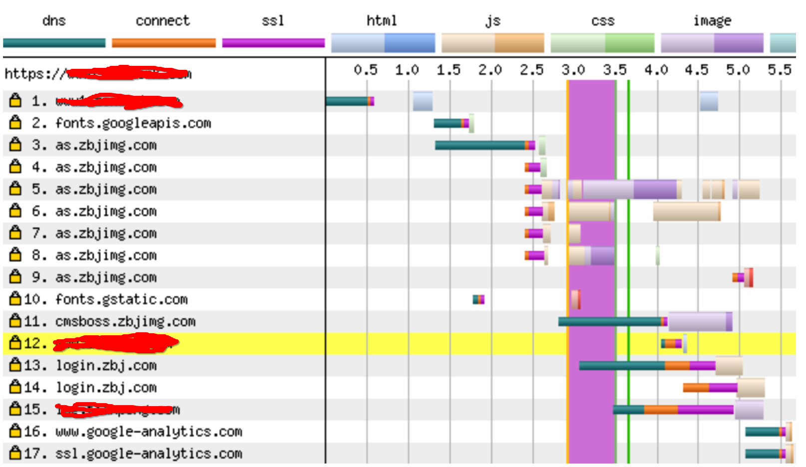
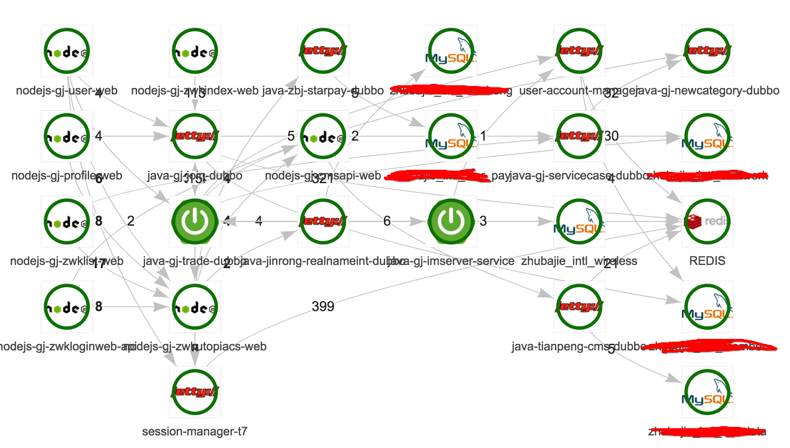
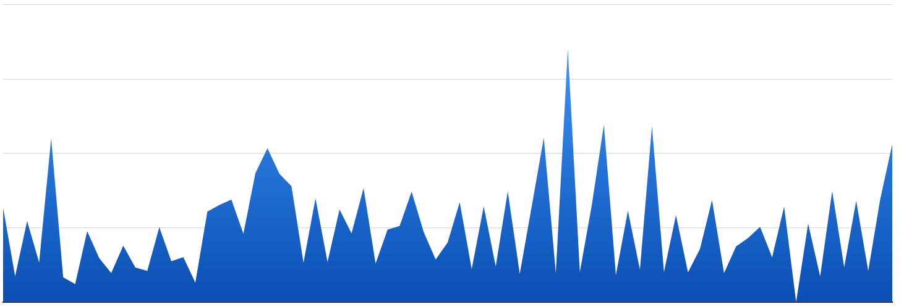
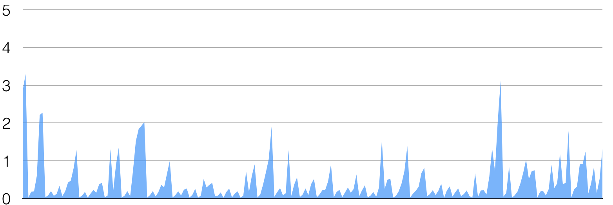

新加坡海外平台搭建实践
- 目录 {:toc}
技术选型
由于考虑到新加坡法律法规与中国比较大的差异，以及差异化运营的需求，在做技术方案时，q我们面临几个选择：
- 1）基于现有平台架构，进行平行精简化移植
- 2）从0开始搭建平台
方案一可以充分利用平台现有资源和经验，但是现有系统复杂度高，梳理和精简化工作量大，方案二可以允许考虑新加坡市场的特殊性，DIY性更强，但当时考虑无法较好的利用现有平台的优秀经验，存在重复造轮子的情况。最终，我们选择了使用方案一进行，在新机房里重新部署一份平台并进行业务规则调整。
新加坡网络运营商比较多，M1,StartHub,SingTel为主导，还有很多比较小型的运营商，如LGA、myRepublic、pacificInternet等，类似中国的长城，艾普等。做为东南亚的经融中心，虽然网上传闻新加坡网络多快多快，可是在未到达新加坡本地体验之前，我们还是太相信网络测评/拨测数据（后面会提及实地测试数据）。
我们知道网站的速度一般由4部分组成，即：
DNS响应速度
用户与机房的连接/下载速度（握手+业务处理+返回）
用户与静态资源CDN之间的下载速度
浏览器的渲染速度
在DNS上，为减少不必要的根服务器询问次数和速度，DNS服务商应尽量选择海外提供商。我们使用webpagetest进行测试发现，在新加坡访问中国DNSPOD解析的域名，在未缓存下，向根寻址速度尽花了1s之多（zbjimg.com使用的是DNSPOD），而下图中googleApis的DNS却只有用了<0.5s。

在机房的选择上，要考虑与现有DEVOPS产品的对接，上线推送速度，运维远控稳定性，用户的访问速度和稳定性，与现有研发系统的整合性等因素综合判断。而CDN供应商的选择则强调节点对区域的覆盖度、稳定性；在浏览器渲染上，则强调布局设计的合理性和缓存的充分利用。
如何精简化平台？
这是面临的第一个难题。BJ经过十年的发展，现在内部研发团队和人员都比较多，整个系统复杂度、耦合度都非常高。内部在经历MVC(多团队维护一个项目)，THRIFT服务化（单团队多项目），DUBBO服务化，NODEJS大前端以后业务越来越高内聚，各个业务团队各显神通（JAVA、PHP、NODEJS、PYTHON多种语言共存），但是耦合一直是比较难的问题（有THRIFT协议、DUBBO协议、HTTP协议、MQ协议、SOCKET协议），上千个项目，各种协议相互依赖，依赖链路非常长，我们又缺乏比较完整的依赖链路管理工具。

我们需要从这个复杂的调用依赖网中抽离出一个简单的猪八戒网。这是给团队的第一个考验。
我们先跟产品经理们一起，对新平台的产品业务进行了一次梳理，针对每一个产品，我们都找到了它的入口项目。
- PHP web 入口项目
- NODEJS web 入口项目
- JAVA web 入口项目
- THRIFT api 入口项目
- JAVA api 入口项目
- JAVA dubbo 入口项目
- 新建的项目
然后，我们得到了一份新平台业务入口项目清单，类似如下 ：
| 产品名 | 所属团队 | 语言 | 入口项目 |
|---|---|---|---|
| 登陆/注册 | 平台产品 | NODEJS | nodejs-gj-login-web |
| 交易 | 交易 | PHP | php-jy-trade-web |
接下来，我们需要知道，每一个上面清单中的项目，在整个业务运行过程中，到底依赖了多少其它的项目？到底依赖了多少组件？到底查了多少个数据库、多少个表？
我们想要得到这样以下这个表格：
| 产品名 | 项目名 | 所属团队 | 语言 | 类型 | 被依赖次数 | 被依赖项目 |
|---|---|---|---|---|---|---|
| 登陆/注册 | nodejs-gj-login-web | 平台产品 | NODEJS | 业务项目 | 0 | - |
| 数据库 | zhubajie_member | 运维 | MYSQL | 中间件 | 10010 | trade |
| 数据库 | zhubajie_member | 运维 | MYSQL | 中间件 | 13000 | task |
| REDIS | REDIS | 运维 | REDIS | 中间件 | 100320 | task |
| REDIS | REDIS | 运维 | REDIS | 中间件 | 103200 | trade |
| 用户服务化 | java-dp-user-dubbo | 平台产品 | JAVA | 业务项目 | 83 | nodejs-gj-login-web |
| 用户服务化 | java-dp-user-dubbo | 平台产品 | JAVA | 业务项目 | 21 | trade |
使用pinpoint梳理项目依赖关系
在调用链路上面，由于公司在去年推行了所有的项目都接入pinpoint，所以我们就可以通过pinpoint查到相应的链路关系。于是我们就写了一个爬虫小脚本，根据pinpoint的http API，按项目名遍历查到这个项目在一个月以内，所有的依赖项目。
与DEVOPS和CMDB信息打通知晓项目分布和资源
通过小爬虫程序的归类，我们第一次对公司所有项目的依赖链路有了一个更加可视化的认识。我们知道了：
- 公司的redis和mc的调用频率
- 哪些项目的环境命中率非常高
- 哪些项目直接访问数据库次数多少
- 哪些项目外部依赖项目达到近百个（耦合度高）
再与DEVOPS和CMDB的项目信息库联动，我们就知道了每一个项目的准确信息、用途、负责人、资源预算等情况。
对研发体系的考验
由于我们需要把部分项目进行平台移植，那么挑战就来了：
- 如何实现该项目与BJ平台的平行迭代而又不相互影响？
- 同一个项目如何在内部开发测试环境中支撑2个平台，跑着2套不一样的逻辑？
虽然BJ内部架构已经走到了微服务的阶段，可是由于历史的原因，并不是所有业务都可以实现积木式组装，梳理调用链和依赖关系过后，进入研发这个阶段，才是难题的开始。
以交易系统为例子，BJ的交易服务化已经比较高，核心板块基本都是dubbo。可是两个平台的业务规则有差异，并且后期演变路径也会不一样。为了在测试环境仿真线上环境，我们需要新平台的测试环境的数据库、计划任务、消息等体系与BJ进行隔离，以免受BJ业务的污染和污染BJ的测试（毕竟BJ交易业务参与的团队非常之多，污染所带来的影响也比较大）。
我们想到了几个方案：
- 1）使用dubbo version的方式在环境中对核心业务启动2份容器，注册到同一个ZK；
- 2）在DNS上针对MYSQL、MQ、REDIS做分流，在数据层进行无感知隔离，但是需要业务改造；
- 3）重建一个mini版的测试环境；
方案1）需要所有的业务接入方dubbo call的地方支持version控制，java本身还比较好处理，可是还有大量的nodejs应用和php应用，这些应用的改造成本比较高；
方案2）运维改动难度不高，可是无法较好的支持长链接的情况，且业务本身要提供环境标签；
方案3）如果我们重建独立测试环境，也就是我们的开发环境、性能环境、预发布环境、灰度环境都要重建，成本比较高。
由于新平台涉及到的业务项目数量达到100+个之多，接下来我们针对方案1）方案2）都与各个业务团队进行了沟通和调研，大家反馈改动的时间成本太高，我们只有方案3）这个选择。但是方案3）成本太高，我们要想办法把成本降下来。
再次进入梳理的阶段，降成本就是也少机器，那就说需要内部有共享服务并可以支持2套业务。我们首先想到的就是固定不变的服务，如：配置中心，前端nginx负载均衡等可以按业务标识进行多向服务的产品。其次就是再次精简业务，对业务进行合并，把机器数量减少到最低，接下来就是把完整的业务在新环境进行重部署和流水线进行细微的改造。
多语言设计策略
源数据类（数据库）直接展示不做翻译，系统中硬编码的部分进行国际化处理；
国际化语言是可以扩展的、一次解决永久受益；
产品配置类由产品自身解决国际化问题；
国际化引起的时间、货币问题由业务自身解决；
最小侵入性；
smarty的多语言解决方案
源数据类（数据库）直接展示不做翻译，系统中硬编码的部分进行国际化处理；
国际化语言是可以扩展的、一次解决永久受益；
产品配置类由产品自身解决国际化问题；
国际化引起的时间、货币问题由业务自身解决；
最小侵入性；
我们使用gettext函数来支持多语言，同时在框架层增加语言识别插件，把语言注册为全局变量，这样不同的业务可以通过依赖我们提供的composer包增加多语言支持。
可问题是，老的PHP系统中，大量硬编码的文案以前都没有i18n的支持，也就是说我们需要把所有的PHP文件有文案的地方都增加i18n函数!!! 好吧，我们又要来慢慢梳理了。
我们需要把'文案' "文案" "[\u4e00-\u9fa5]" 这些所有包含中文文字的地方都修改一遍，都改为函数调用i18n('文案')。这完全是一个体力活，我们需要自动化的完成。所以我们写了一个扫描器，对所有中文都进行了替代。
完成以上操作以后，接下来就是语言字典的生成了。我们需要把系统中所有的中文提取出来，生成字典，交给翻译公司去操作。又到了编码时间，扫描器继续上场。
JAVA、NODEJS、FIS、JS的多语言解决方案
按以上的逻辑，对中文进行替代，生成字典，唯一不同的只是实现的方式和方法有差异而已。
支付问题
这主要是一个产品问题。可是国际化平台，可这也是国际化业务必然要遇到的大难题。不同的国家，有不同的法律和货币及外汇管理政策，要实现跨国贸易和交易业务，支付是必然要跨过的坎。
目前主流的跨国收单和结汇平台不太多，有的只收单，有的只结汇。BJ支付团队与新加坡团队共同努力，做了许多调研，考虑到汇损、结汇成本、收款周期、收单成本、扩展能力，最后才找到一路复杂的道路。
而对于支付引擎来说，要面对的是：
- 与国际渠道的通讯稳定性；
- 多渠道支持能力；
由于BJ有自己的支付引擎基础，这块对技术来说，问题不是太大。在这些工作都OK以后，接下来就是上百人的研发团队共同开发的问题了。
海外平台稳定性&速度问题
在研发之初，我们对于跨国的网络访问没有关注太多，完全相信了拨测的数据。但是真实上线以后，我们却栽了一个大坑。
由于我们机房在中国，使用海外动态CDN加速回国。我们通过拨测平台对新加坡到机房的CDN动态加速，新加坡到CDN节点进行过测试，数据很不错。可是上线以后，我们却不停的收到反馈：
- 网站怎么突然打不开了啊？
- 网站打开好慢啊
- 网站图片下载好慢
- 网站乱码
而我们的监控平台上，却数据一直很正常，未收到任何的报警。我意识到，网络通讯上稳定有问题！于是我们在新加坡各个运营商的网络环境都对平台进做了一个真实环境的网络测试。
CDN节点的连接测试
环境：新加坡LGA提供商
时间：2017-11-11 22：00- 2017-11-12 08：30
对象：CDN供应商
指标：下载完成时间

可以看出，请求1KB的JS文件，下载完成时间波动非常明显，甚至有超过4S的情况出现。我们更换myRepublic网络环境进行了测试，发现波动更加严重。在M1、starHub、SingTel上也是要稍微好一些。

我们立即与CDN供应商进行了联系，供应商由于是中国企业，在新加坡的覆盖存在不足，所以只能做监控和手动处理。同时我们又立即与其它CDN供应商联系，再次进行实地稳定性测试，最终切换了CDN供应商。
异地平台数据监控
在完成各类数据实现测试和问题解决以后，我们迫切的需要一套用户端的行为监控。提前发现用户存在的问题并进行修复。
BJ内部由APM+ELK可以查阅到所有后端业务的异常，同时集成报警规则可以很快了解平台状态。但是在前端用户层的错误，我们却没有较好的监控机制，如某页面乱码、某个业务响应异常、页面渲染缓慢等。
接着，我们利用google analytics的事件机制，在js前端增加异常捕获，把前端浏览器错误全部提前到google来收集和分析。而渲染缓慢的问题，内部的UE平台刚好正在改造，配合google的渲染速度指标，我们可以有一个比较粗的了解。
然后，我们利用kibana，把日志进行了过滤，形成了一个简单的平台运行状态的报表，供所有同事查看。流量增长、业务出错都可以在30s左右直观了解到。
关于团队和感想
经历这次项目，团队在海外项目研发上积累了许多经验，同时在与其它团队的协作、与新加坡团队的协作表现得非常棒，为能与这样的团队共同战斗而荣幸。
感谢BJ，感谢各位与我们共同战斗的同事（田哥哥、局长、子豪、红阳、军哥哥、VV、小双、媛媛、盾哥）以及安全、运维、DEVOPS、SM、支付、测试等团队的大力配合。
部分同事更是努力学习英语，内部薄荷阅读、百词斩走红。